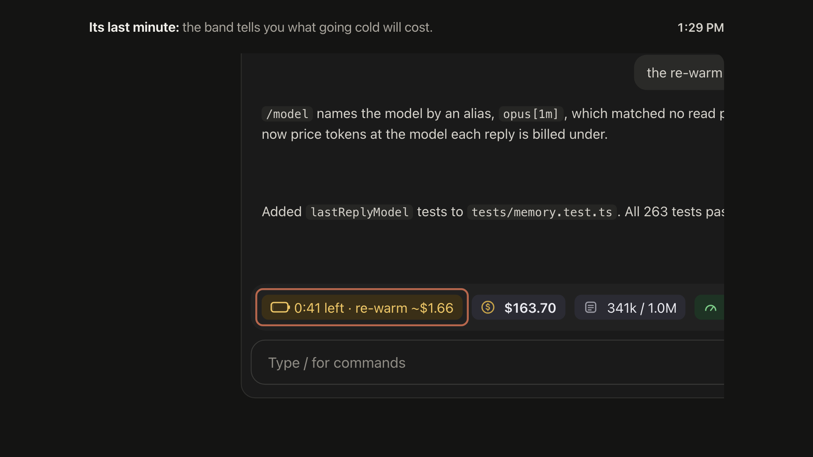

Know what your next Claude Code message costs.
A band above the prompt that counts down your prompt cache, tells you what letting it go cold will cost, and keeps your spend, context and 5-hour / weekly limits in view.
$ claude plugin marketplace add HMarzban/claude-mod $ claude plugin install session-usage-band@hossein-mods

The cache keeps Claude Code cheap. Until you step away.
Warm
Each message re-reads your conversation from the cache, at a tenth of the input price or less.
Idle
The cache lasts 5 minutes after your last request on API pricing, or an hour on a subscription.
Cold
The next message writes the whole conversation again at 1.25× input. On 300k tokens of Opus 5.5, that's about $1.50.
Nothing in Claude Code warns you it's coming. session-usage-band does, with the countdown and the price, before you hit enter.
Every number that decides your bill, in one row.

Cache countdown
A battery that drains as the cache ages. In its last minute it turns amber and names the re-warm price.
Session spend
The running total, and what your last message cost on its own.
Context
How full the conversation is, and how close auto-compaction is.
5-hour and weekly limits
Usage, the reset time, and a warning when your pace would run out before the reset.
Click ▿ for four cards with every fact labelled, under a line that shows your project, git branch and uncommitted changes. Nothing is ever red: amber means act soon, and colour is never the only signal.
The price comes from your own bill.
A mod can't reach a pricing table, so the band solves the per-token rate from the session's cost and token counts. Every kind of token is a fixed multiple of base input, which leaves one unknown:
- A re-warm is then the whole context written to the cache again, always shown with
~. - It remembers. Reopen an old session and it recalls when the last reply was and what a token costs, or reads it once from the end of the transcript.
- It stays out of your way. It never calls a model, never writes files and never sends anything anywhere. Besides two read-only git commands, it runs only
tail. - It's a mod, written with Claude Code's function-hooks API: TypeScript and JSX, no dependencies, no build step, 260+ tests.
Questions people ask.
Why did my Claude Code message cost so much more than the others?
Most likely the prompt cache went cold. Claude Code caches your conversation for 5 minutes or an hour after the last request. After that, the next message writes the whole conversation to the cache again at 1.25× the input price.
Does it cost tokens?
No. It never calls a model, and it never suggests sending a message to keep the cache warm. That would mean burning tokens to avoid burning tokens.
Is the re-warm price exact?
It's an estimate, shown with ~. It follows Claude Code's own ledger, which prices every cache write at 1.25×. Anthropic bills a 1-hour cache write at 2×, so per-token API users on a 1-hour cache may pay up to 1.6× the estimate.
How does it know if my cache lasts 5 minutes or an hour?
It can't read your billing, so it assumes an hour and corrects itself to 5 minutes if it sees the cache rebuild sooner. Set CLAUDE_CODE_PROMPT_CACHE_TTL=5m or 1h to remove the guess.
Does it work in the Claude desktop app?
Yes. It draws in the desktop app's Code tab with icons and meters, and in the terminal as text. Tested on Claude Code 2.1.295.
Does it work on light themes?
Yes. Set CC_BAND_APPEARANCE=light, or plain for theme colours only. NO_COLOR is respected.